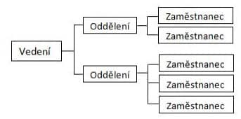
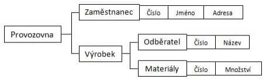
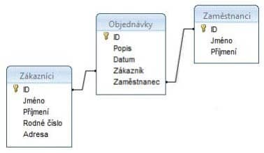

21. DATABÁZOVÉ SYSTÉMY
Základní pojmy
Data
Data jsou získané a zachycené údaje popisující realitu. Jsou to fyzicky zaznamenané výsledky pozorování reality, fakta, poznatky nebo znalosti a vědomosti. Interpretací dat a jejich vztahů pomocí znalostí vznikají informace.
Informace
Informace jsou údaje o prostředí, jeho stavu a procesech v něm probíhajících. Informace snižuje nebo odstraňuje neurčitost. Množství informace lze charakterizovat tím, jak se přijetím změní míra neurčitosti na straně příjemce informace.
Databáze
Systém s pevnou datovou strukturou, který umožňuje uchovávat data. Soubory mezi sebou mohou být propojeny různými vztahy nebo klíči. Celkově jde o software, který umožňuje přístup a manipulaci s uloženými daty.
Entita
Je prvek z reálného světa (např. člověk, stroj, zvíře, město), který je popsán svými vlastními charakteristikami nebo vlastnostmi. Ty se většinou považují za atributy (např. jméno, příjmení, stav, plat, hmotnost, počet končetin, jejich délka … a tak)
Atributy
Atributy popisují entity. Jedná se o jejich jedinečné vlastnosti jako jméno, příjmení, barva vlasů atd.
Perzistence dat
Zajištění, aby data byla nepoškozena a bezpečně uchována I po ukončení běhu aplikace.
Integrita dat
Zachování stejnosti a kompletnosti dat při jejich přenosu. Zachování dat pro jejich zamyšlené použití.
Konzistence dat
Data vyjadřují smysluplnou hodnotu, která popisuje reálný svět. Nekonzistentním stavem může být například záporný věk osoby.
SŘBD
Systém řízení báze dat (kdo z toho má kurva něco pochopit … anglicky DBSM – database management system). Je to software, který zajišťuje rozhraní pro práci s databází. Společně s databází se nazývá databázový systém.
Takovýto systém musí být schopný řídit a definovat strukturu dat. Udržovat datovou integritu a konzistenci a také je udržovat perzistentní. Měl by také umět spravovat uživatele databázového systému a jejich přístup k určitým typům dat nebo informací.
Historie vývoje zpracování dat
- Klasické kartotéky
- Děrné štítky při počítání lidu v USA
- První databázový jazyk COBOL
- Síťové databáze
- Hierarchické databáze
- Relační databáze a SQL – poprvé pohled na data jako na tabulky
- Objektové databáze – neuspěly, proto vznikl kompromis, objektově relační databáze
- Objektově-relační databáze
Rozdělení datových modelů
Databáze se rozdělují podle způsobu ukládání dat a vazeb mezi nimi a dají se tak rozdělit na několik základních typů.
Základní principy datových modelů
Hierarchický
Uspořádává data do stromové struktury. Záznam představuje uzel ve struktuře. Vztahy mezi záznamy jsou pouze na základní bázi rodič-potomek
Síťový
Je pouze zobecněním hierarchického modelu. Přidává mnohonásobné vztahy.
Relační
Model má jednoduchou strukturu, data jsou organizována v tabulkách, které se skládají z řádků a sloupců. V těchto tabulkách jsou prováděny všechny databázové operace.
Objektově orientovaný
Je inspirován objektově orientovaným programováním. Záznam je v databázi reprezentován objektem a jeho hodnotami, které jsou definovány v programovácím jazyce, který podporuje objektově orientované programování.
Relační model dat
Pojmy
- Tabulky – relace, dvourozměrné struktury
- Sloupce v tabulkách – atributy
- Řádky – záznamy
- Atributy mají určený datový typ
Typy klíčů
Kandidátní
hodnota, která jednoznačně dokáže
identifikovat daný záznam a může se tak stát primárním klíčem
Alternativní
kandidátní klíče, které nejsou
vybrány jako primární
Primární
jednoznačný identifikátor záznamu. Může
jím být jeden nebo více sloupců. Klíče musí obsahovat hodnotu a
nesmí být NULL. Často se využívají uměle generované a
automaticky inkrementované hodnoty.
Cizí
slouží pro vyjádření vztahů (relací) mezi
databázovými tabulkami. Jedná se o atribut nebo skupinu
atributů, které umožní identifikovat záznamy tabulek, které
spolu navzájem souvisí.
Relační operace
Spojení
Výsledná tabulka obsahuje jen ty záznamy z
obou zdrojových relací, které se shodují v položkách, přes které
se spojení provádí.
Selekce
Označuje, ktere zaznamy se maji vratit …
podmíka WHERE atd
Projekce
Označuje, ktere sloupce se maji vratit …
SELECT *, SELECT a,b,c
Vztahy mezi tabulkami
Unární vztah
relace je spojena sama se sebou.
Typickým příkladem je vztah zaměstnance a jeho nadřízeného, kdy
nadřízený je také jedním ze zaměstnanců, pročež také může mít
nadřízeného. Vztah se realizuje vložením primárního klíče relace
zaměstnanec ve formě cizího klíče opět do relace zaměstnanec.
Binární vztah
klasický vztah mezi dvěma relacemi
Ternární vztah
vztah mezi třemi relacemi najednou.
N-ární vztah
vztah mezi n-relacemi zároveň.
MySQL a využití
MySQL je open-source systém pro správu relačních databází SQL. MySQL je populární variantou databázového systému pro spoustu webů a webových aplikací, které využívájí LAMP stack pro svůj vývoj. Databáze MySQL uchovává data v tabulkách, které mezi sebou mohou mít různé druhy definovaných vztahů a mají definovanou svoji vlastní strukturu, názvy a počet sloupců. Dále také spravuje uživatele a jejich pravomoce pro přístupu k jednotlivým tabulkám či datům.
MySQL využívá pro manipulaci a přístup k datům jazyk SQL, jak napovídá název. Tento jazyk umožňuje zobrazovat, modifikovat a nebo mazat data z databáze. Jde pomocí něj vytvářet komplexní příkazy, které spojují několik tabulek a stovky záznamů na porovnávání nebo získávání dat.